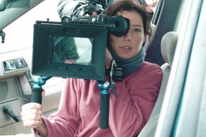

Reed Morano: A Celebration of Women Behind the Camera
by Daniella Duarte, Editorial Staff Writer
 This year, we are honoring cinematographer and director Reed Morano as our Woman of the Year for her astonishing body of work, as well as her induction into the legendary cinematographer’s guild, The American Society of Cinematographers. Reed is one of only 14 women of the approximately 350 active members in the organization, and is also youngest member to ever be admitted. Her work includes Little Birds, For Ellen, Kill Your Darlings, The Skeleton Twins, and her upcoming directorial debut, Meadowland, which she also shot.
This year, we are honoring cinematographer and director Reed Morano as our Woman of the Year for her astonishing body of work, as well as her induction into the legendary cinematographer’s guild, The American Society of Cinematographers. Reed is one of only 14 women of the approximately 350 active members in the organization, and is also youngest member to ever be admitted. Her work includes Little Birds, For Ellen, Kill Your Darlings, The Skeleton Twins, and her upcoming directorial debut, Meadowland, which she also shot.
Among many of Reed’s accomplishments in film, she was honored with the 2011 Kodak Vision Award for cinematography at the Women in Film Crystal + Lucy awards, and in past years has been named one of Variety’s “10 Cinematographers to Watch,” one of Ioncinema.com’s “American New Wave 25,” and one of five innovative cinematographers in ICG Magazine’s “Generation Next” spotlight. In 2012, Reed’s work was featured in Indiewire’s “On the Rise ’12: 5 Cinematographers Lighting Up Screens in Recent Years” and was named an Indiewire “Heroine of Cinema” twice in 2 years. Some of Reed’s thoughts on the digital revolution and how it has affected filmmaking are featured in Keanu Reeves’ acclaimed documentary Side by Side. She also earned the honor to be featured in Kodak’s long-running OnFilm series.
Still from “Frozen River”
Still from “For Ellen”
Equally impressive, Reed has become a mainstay of the Sundance Film Festival; Frozen River won the Grand Jury prize at the 2008 Sundance Film Festival and went on to be nominated for two Academy Awards (Best Actress for Melissa Leo and Best Screenplay) and seven Independent Spirit Awards, including Best Picture. The film received critical acclaim with film critic Hiram Lee mentioning “The necessary attention has been paid to seemingly small but ultimately meaningful details, and the camera of Hunt and cinematographer Reed Morano lingers just long enough on the right things—a face, the interactions between two children—to allow us time to think about what’s playing out before our eyes.” Audiences in Park City have also seen the premieres of Little Birds, which competed at the 2011 festival, Shut Up and Play the Hits, a feature-length documentary about the band LCD Soundsystem that premiered at the 2012 festival, and For Ellen, which also debuted at the 2012 festival in the dramatic competition.
Still from “The Skeleton Twins”
In 2014, audiences were treated to two more of her projects—the hugely successful The Skeleton Twins, a black comedy starring Kristen Wiig and Bill Hader, directed by Craig Johnson and co-written by Mark Heyman (Black Swan), and War Story, a dark drama filmed in Sicily starring Catherine Keener and Sir Ben Kingsley, directed by Mark Jackson (Without). Both of these films premiered at the Sundance Film Festival in 2014. Also released this year were the cult 35mm and 65mm dark drama Autumn Blood, shot in the Tyrolean Alps in Austria, starring Sophie Lowe and Peter Stormare, and Rob Reiner’s latest feature, And So It Goes, starring Michael Douglas and Diane Keaton (her second collaboration with Reiner). In January of 2014, HBO premiered the first season of its new original series, Looking, shot masterfully by Reed and directed by Andrew Haigh (Weekend).

More recently, Reed began production on her first feature as both director and DP (not to mention editor); the dark drama Meadowland features a murderer’s row of talent from Olivia Wilde and Luke Wilson to Giovanni Ribisi and Elisabeth Moss. Moreover, Reed is generously leading the charge on a movement to control motion interpolation AKA “the soap opera effect” on our HDTVs. Reed’s change.org petition is supported by 10,500 signatures and has gained significant momentum, attracting the attention of both the film and technology communities. The petition reflects her passion for the industry, and the value of her work and the work of other DPs.

Fusion greatly admires Reed for her talent, tenacity, and forward-thinking mentality. In a male-dominated industry, she’s more than proven her mettle and integrity, asserting, “I do not want to be treated special or differently because I’m a woman and I’m a DP. That’s what I’ve fought so hard for my entire career. I can do my job just as well as the next guy.” Further proving her commitment to the art, she even filmed Little Birds while seven months pregnant! Fusion also looks up to Reed because of her familiar origins – she graduated from NYU’s Kanbar Institute in 2000 and accredits much of her young enthusiasm for cinematography to Professors Michael Carmine, David Irving and Rick Litvin. Following graduation, Reed paid it forward as an adjunct cinematography professor, co-instructing the first Advanced Television classes that NYU offered.
Currently, Reed lives in Brooklyn, New York with her husband and two children. Her reel can be found here. We thank Reed for her tremendous dedication to the art and for providing a hugely positive role model.
Congratulations to Fusion’s Woman of the Year, Reed Morano!